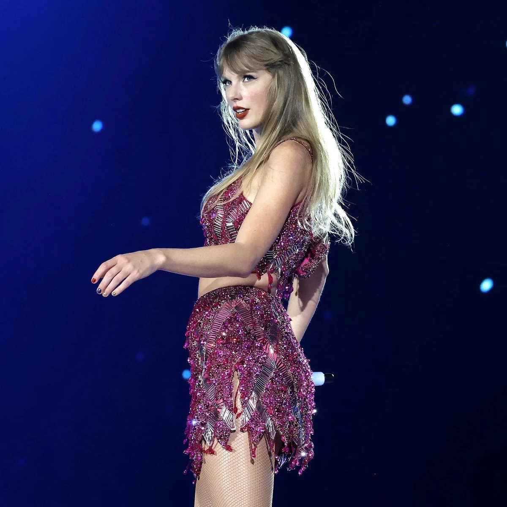

Taylor Swift es el primer álbum de estudio de la cantante y compositora estadounidense Taylor Swift, fue lanzado el 24 de octubre de 2006. Swift escribió las canciones para el álbum durante su primer año de preparatoria. Swift experimentó grabar el álbum con muchos productores, en última instancia, eligió al productor que produjo su demo, Nathan Chapman. Musicalmente, el álbum presenta el género country con elementos de pop rock, incorporando instrumentos como guitarras, banjos y violines.
Fearless (Taylor's Version) es el primer álbum de estudio regrabado de la cantante y compositora estadounidense Taylor Swift, lanzado a través de Republic Records el 9 de abril de 2021. Grabado con voces más nuevas, Fearless (Taylor's Version) consta de las 19 pistas de la edición platino del segundo álbum de estudio de Swift, Fearless, su sencillo de 2010 «Today Was a Fairytale» y seis adicionales «From the Vault», canciones que no se incluyeron en el álbum de 2008.
Speak Now (Taylor's Version) es el tercer álbum de estudio regrabado de la cantante y compositora estadounidense Taylor Swift, publicado el 7 de julio de 2023 a través de Republic Records. Es una regrabación del tercer álbum de estudio Speak Now (2010), siguiendo la contramedida de Swift contra el cambio de propiedad de los másteres de sus primeros seis álbumes de estudio.
Red (Taylor's Version) es el segundo álbum regrabado de la cantante y compositora estadounidense Taylor Swift, lanzado el 12 de noviembre de 2021 a través de Republic Records. Es una regrabación del cuarto álbum de estudio de Swift, Red (2012), y sucede a su primer álbum regrabado, Fearless (Taylor's Version), que fue lanzado en abril de 2021. La regrabación es la contramedida de Swift contra el cambio de propiedad de los másteres de sus primeros seis álbumes de estudio.
1989 (Taylor's Version) es el cuarto álbum de estudio regrabado de la cantautora estadounidense Taylor Swift, fue lanzado el 27 de octubre de 2023 a través de Republic Records. Es una regrabación de su quinto álbum de estudio 1989 (2014). La cantante anunció el lanzamiento el día 9 de agosto de 2023 en Los Ángeles, durante el final de la primera etapa de su sexta gira musical The Eras Tour por Estados Unidos.
Reputation es el sexto álbum de estudio de la cantante y compositora estadounidense Taylor Swift, publicado el 10 de noviembre de 2017 por el sello discográfico Big Machine Records.1 El álbum fue producido por Jack Antonoff, Max Martin, Shellback y la propia Taylor Swift, quien es también productora ejecutiva. Incluye únicamente una colaboración con el cantante y compositor inglés Ed Sheeran junto al rapero estadounidense Future.
Lover es el séptimo álbum de estudio de Taylor Swift, lanzado el 23 de agosto de 2019 a través de Republic Records. Como productora ejecutiva, Swift reclutó a los productores Jack Antonoff, Louis Bell, Frank Dukes y Joel Little para el álbum. Definido por Swift como "una carta de amor para amarse a sí mismo", Lover celebra todo el espectro del amor, utilizando tonos claros y brillantes que parten de la naturaleza oscura de su predecesor, Reputation (2017).
Folklore es el octavo álbum de estudio de la cantante estadounidense Taylor Swift. Fue u álbum sorpresa, lanzado a través de Republic Records el 24 de julio de 2020. El álbum se aparta de lo sonidos mainstream y má comerciales de los últimos trabajos de la cantante y se destaca por melodías armónicas introspectivas, una interpretación lírica más trabajada y una utilización más consistente d la instrumentalización.
Evermore es el noveno álbum de estudio de la cantautora estadounidense Taylor Swift. Fu lanzado el 11 de diciembre de 2020. Evermore es una secuel conceptual de su predecesor, siendo ambos álbumes sorpresa anunciados horas antes de s lanzamiento. Swift describió Evermore como un "disco hermano" de Folklore.
Midnights es el décimo álbum de estudio de la cantautora estadounidense Taylor Swift. El álbum se lanzó el 21 de octubre de 2022 a través de Republic Records.1 Anunciado en los MTV Video Music Awards de 2022, el álbum marca el primer trabajo nuevo de Swift desde sus álbumes de 2020, Folklore y Evermore. Midnights es un álbum conceptual sobre la contemplación nocturna, escrito y producido por Swift con Jack Antonoff como principal colaborador.
The Tortured Poets Department es el undécimo álbum de estudio. Lanzado el 19 de abril de 2024. Para sorpresa de los fanáticos, lanza un segundo disco minutos después del estreno: The Tortured Poets Department The Anthology con 31 canciones con una duración total de 2h 2min!